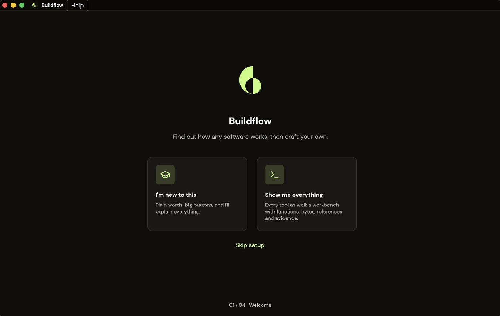

Point Buildflow at a website, an app or a game. It studies the original, has AI build a new project from what it learned, and checks the result against the original.
Early alpha. Not signed with a paid certificate, so your computer warns you the first time you open it.

Three steps, repeated until the build is ready.
Buildflow inspects a website, app, game or file with real tools and keeps evidence for what it finds.
An AI builds your version in the language or framework you ask for, from what the study found.
It compares the build with the original, such as a website's pages at three screen widths, and fixes what's off.
Add it once in Settings. Keys stay in your computer's keychain.
Building works best with a strong model. Small local models can answer questions about a target but often can't finish a build.
A guided mode in plain words, or a full workbench with every tool for people who want the details.
It only looks at the original from the outside, the way a visitor or user would. Looking inside programs is off unless you turn it on.
A native app for Mac and Windows. Nothing goes anywhere except to the AI you choose.
Version 0.6.1. The easiest way to install and stay up to date is the FlowApps launcher.
Both Mac links are the same file: one DMG runs on Apple silicon and Intel. Older versions and checksums are on the Releases page.
Only study and rebuild things you have the right to. Building your own version of how something works is not the same as copying its code, artwork, name or content: those belong to their owners.